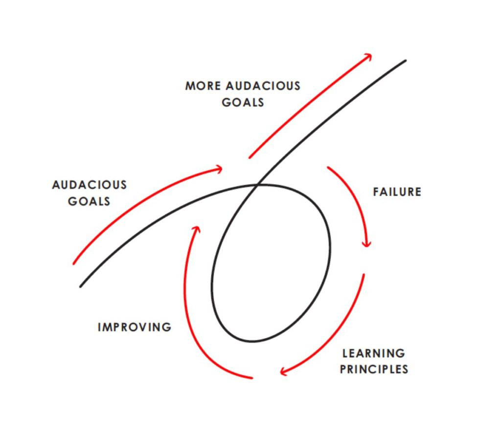
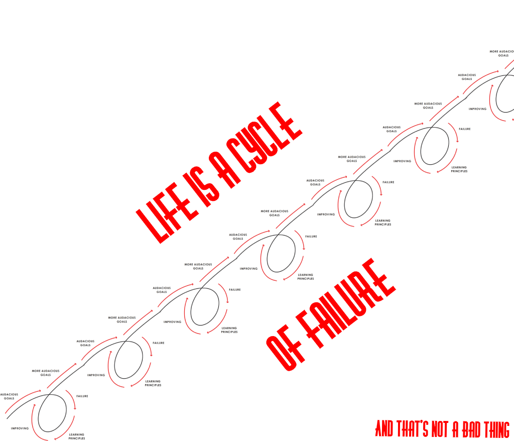

So it’s not all that uncommon to see an awkward corporate event with CEOs trying to get the audience enthusiastic and/or deliver wise (but overused) self-help sayings…
A MUCH better example than I thought I’d be able to find 😉
And it’s relatively easy to dismiss their words as cliché. That being said, some of these sayings actually hold a lot of value. They’re just often dismissed by the majority of people because they’re not too relatable. One of these sayings for me was to hear successful people talking about how it’s great to embrace failure…
Teenagers vs. CEOs
Seriously, for a young teenager who hasn’t really done anything incredible in their life, why would it make sense to think that the best way to learn in life is to fail instead of succeeding? I always just scoffed at that saying (among many others) thinking that these successful people were just being sales-y and trying too hard to be inspirational. 😫
What the early-teenager version of myself didn’t consider was the possibility that these glamorous CEOs and other successful people TRULY could believe that (instead of just saying fake things to get attention). Later, I even found out WHY they believed this idea about failure… But let’s take a step back.
Think about the average teenager in the developed world. For a good portion of teenagers, school is the most major experience of their lives growing up (and at least a very prominent experience for almost everyone). In school, it’s almost ALWAYS encouraged to succeed (and you can easily tell whether you succeed or not based on the mark you get attached to everything you work on). Most of the time, if you’re decently responsible, you don’t fail.
Now, contrast this to the world of the CEOs (the world that I, like many other teenagers, didn’t understand at all). CEOs are almost ALWAYS in periods of uncertainty. It’s not easy to tell how successful the endless list of tasks their companies work on are in competitive, fast-paced environments. 😵
In one environment, if you fail the next test, you cry about it and if you’re decently responsible, maybe you’ll work harder for the next one. In the other, if you fail at keeping your business profitable, it’s one of the most crushing defeats you could have to deal with… so why would CEOs embrace failure?????
Old Me + New Failures = Now I Understand
Recently, I’ve been lucky enough to start experiencing things in life beyond school. The first finding I had? Life beyond school is hard… 😕 There are so many moments of uncertainty I’ve had in the last little while, not knowing how to study for the next hackathon pitch or meeting with a professor.
And not all of those moments ended well.
In fact, a good chunk (but not the majority) were unfathomably awkward experiences where I don’t know what to say, was sweating from nervousness, and was just trying to put on a smile while there was a little kid running around panicking inside my head 😨. And these experiences kept on happening again and again, the more meetings, pitches, etc. I did.
But then I started to notice something new. After having failed at having good pitches or meetings the first 5 or 6 times, I started to learn the same lessons from each one and gradually implement them. Each successive meeting would be slightly less awkward.
Was failure somehow helping me succeed????
As I started to decrease the number of failures I had in any one area and started succeeding more and more, I had a chance to reflect back on when I dismissed the CEOs a few years earlier. And that’s when I connected the dots:
Every time I had succeeded, I was forced to keep on going with the uncertainty, not knowing how things would turn out and take on a larger challenge. When I failed though, I could finally stop to catch my breath, look back on what went wrong, and come out of the experience with a new strategy on how to come closer to success next time.
No wonder CEOs liked failure!!! 😄 That was the only time they would be forced to stop and figure out how to best grow, instead of just continuously being hammered by pressure to keep going with uncertainty.
What I didn’t Realise
Before I came closer to understanding why failure was important, I needed a key ingredient that I didn’t have in my early teens: experience failing. Before I actually had those years of experience facing uncertain success vs. failing, feeling bad, but then getting better… how could I have compared those two experiences to realise that I preferred the second option to the constant uncertainty of success?
My hypothesis on what young people don’t realise is something Dr. Jordan Peterson pointed out very succinctly:
“Life is not a game. It’s a series of games.”
Young people often don’t have experience with this. We’re always thinking about the next test, the next assignment, the next firm milestone. So when we win or lose these tiny games, it obviously feels much worse to fail than to win.
Yet, when I started going out into the real world, where I had more independence about what I do and don’t choose to do and had to face a lot more uncertainty and responsibility… I started to see a new part of the picture of life: the process of reflecting back over the last game you played and preparing for the next one.
From doing a presentation in school once a year, I couldn’t realise that it was good to mess up every once in a while to force myself to stop and think back to how I could improve. But from doing 10 presentations a year in many different contexts outside of school, I can now stop focusing on whether I fail the first one so that I can take risks to try something new for the first one and gain skills for all the rest.
When it comes to failure in life, Ray Dalio almost perfectly summarised what failure in any individual game looks like for us:
I could write an entire blog post about this model of failure, but the key idea is that you take on a goal, fail, reflect back on the failure, get better at getting the goal done, and then benefit from the failure to actually succeed with the goal. But what we need to realise about life is that the diagram actually looks like this:
I know youth sometimes feel inclined to read these reflections for whatever reason. One of the biggest lessons I could give to my past teenage self is about this cycle of failure. Yes, it doesn’t make sense to embrace failure given what we’re taught in school most of the time. Yes, it sometimes seems like the glamorous CEOs are crazy.
But that’s why the best thing you can do to eventually look back on a period of growth after a failure and feel satisfied is just to START TAKING ON CHALLENGES. It is insanely valuable to stop playing games in life and start playing a series of games. So why not start now?
- Madhav Malhotra
Sunday, 21-Jun-2020 20:42:14 GMT+0000